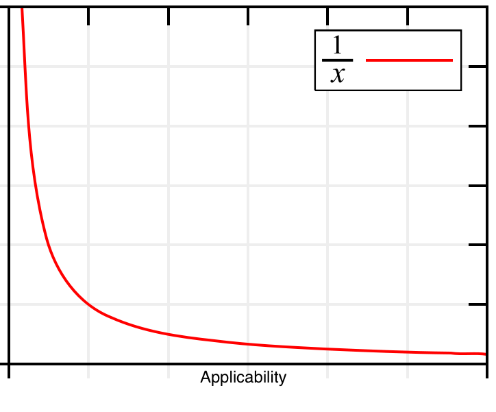
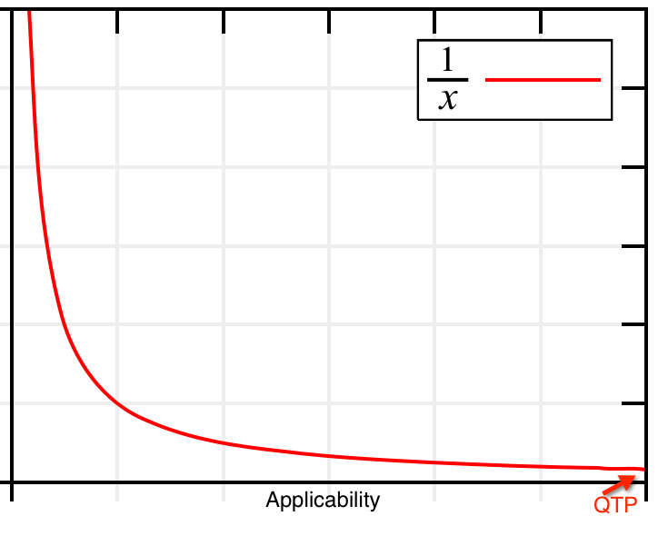
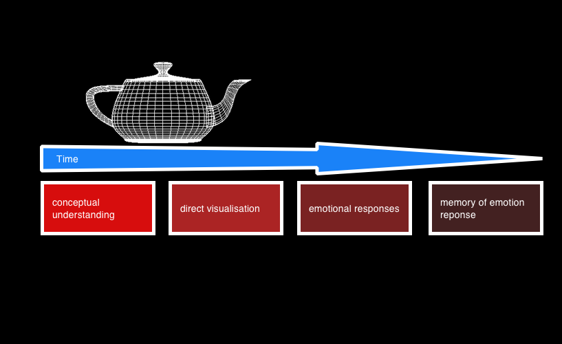

on my soapbox
early 2012
Ryan Boucher, ThoughtWorks
http://en.wikipedia.org/wiki/File:Hyperbola_one_over_x.svg


http://upload.wikimedia.org/wikipedia/commons/a/a6/The_triad_constraints.jpg
http://upload.wikimedia.org/wikipedia/commons/9/92/PM_DiamondModel.jpg
http://upload.wikimedia.org/wikipedia/en/e/e8/TripleConstraint.jpg
http://upload.wikimedia.org/wikipedia/commons/6/66/PM_TriangleModel_suggestion.JPG
http://upload.wikimedia.org/wikipedia/commons/2/2c/PM_StarModel_suggested.jpg
http://upload.wikimedia.org/wikipedia/commons/a/a6/The_triad_constraints.jpg
http://en.wikipedia.org/wiki/File:Ford_assembly_line_-_1913.jpg
FOREVER!
done vs. not done
sit down if you didn't include on of these terms
- performance
- capacity (load- spike and endurance as well as volume)
- usability
- penetration
- reliability
- scalability
- stress
- auditing
- accessibility
- compliance
- backup & recovery
- deployment
- disaster recovery
sit down if you didn't include on of these terms
- failover
- instrumentation
- robustness
- internationalisation and localisation
- training & help
- trustworthiness
- visibility
- user experience
- non-repudiation
- authorisation
- authentication
- interoperability
- data integrity

backlog not shown here
directional walls

where is the problem?
a blocked row
http://www.starfetch.com/keywords/Rick_Moranis/Rick_Moranis_4.jpg
A game is destined to become boring, automated, cheated and exploited.
Raph Koster - A theory of fun
REMA model
- Rollacoaster - uncharted 3
- Experiment - civilization
- Mastery - chess
- Application - creature creating in spore
what is design?
do design decisions expire?
who designed this?
ethics of teaching design
- situation: test scripts to be followed by anyone
- option: lean test scripts (action-target-scenario)
- situation: scripted testing excludes exploratory
- option: build trust in test automation
- situation: test automation after coding
- option: move test automation forward
- situation: test automation by testers
- option: build trust in developer tests, share ownership
- situation: test automation in separate team
- option: co-location with testers
- situation: separate test team
- option: build trust between dev and test
- situation: excessive test planing
- option: test plan on a page

Maybe knowledge is too great and maybe men are growing too small," Said lee. "Maybe, kneeling down to atoms, they're becoming atom-sized in their souls. Maybe a specialist is only a coward, afraid to look out his own little cage. And to think what a specialist misses-- the whole world over his fence.
Join Steinbeck - East of Eden
Learning music changes music. Learning about wine changes wine. Learning about Buddhism changes Buddhism. And learning Excel changes Excel.
What the music expert hears has more notes, more instruments, more syncopation... than what I hear when I listen to the same piece. Of course I don't mean the music technically changes, but if the way we experience it shifts, it is AS IF the music itself shifts.
Kathy Sierra - http://bit.ly/IjxpdV
don't do work unless you need it
do work in advance
have more workers
have better workers
be more efficient
- Help the analysts challenge assumptions; it's a hard job they have
- Share your knowledge of testing with the developers
- Help the uxers to design
- Let the developers write test automation
- Prefer disposable automation when you must write code
- Prefer exploratory testing over scripted testing
- Prefer throw away documentation over formalised documentation
- When you're not testing you're not testing
- Be passionate
- Practice self care
dumb names
- local
- dev
- dev-int
- test
- test-int
- performance
- qa
- staging
- customer-staging
- production
- user acceptance test
- enterprise test
- system test
reasonable names
- local
- exploratory
- performance
- produnction
near future
far future
Ryan Boucher
ThoughtWorks
distributedlife.com
cromulent-testing.com
twitter.com/distributedlife